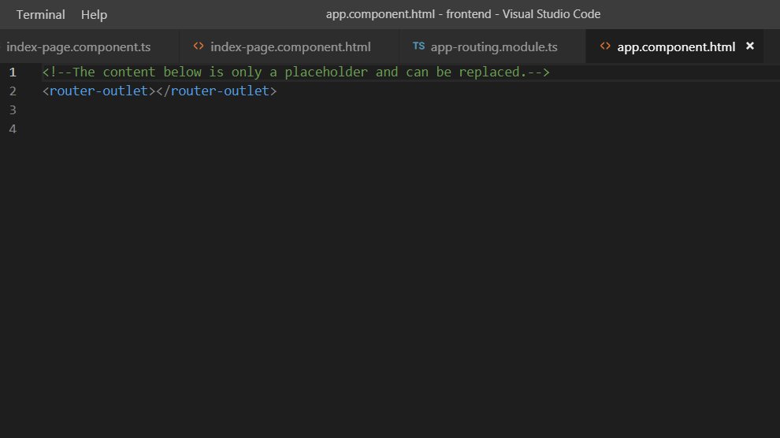

Το Angular Router καθιστά δυνατή την πλοήγηση από το ένα view στο άλλο, καθώς ο χρήστης πραγματοποιεί λειτουργίες στην εφαρμογή. Μεταφράζει ένα browser URL ως μια εντολή, για να πλοηγηθεί σε ένα view του client. Για παράδειγμα , όταν ο χρήστης πληκτρολογήσει το URL localhost:8080/login, μπορούμε να ορίσουμε, να εμφανίζεται το login component.
Το Spring Boot "σερβίρει" το στατικό περιεχόμενο από τα resources στο /static. Το index.html θεωρείται welcome page, "σερβίρεται" ως root resource στο http://localhost:8080/ και περιέχει την angular εφαρμογή.
Θέλουμε όταν ο χρήστης πληκτρολογεί URLs, όπως /login, /register, /product, να τα χειρίζεται η Angular και όχι το Spring Boot. Θα δημιουργήσουμε έναν controller, που θα κάνει forward τα αιτήματα αυτά στο index.html, δηλαδή στην Angular.
package springeshop.controller;
@Controller
public class RoutesController{
public static final Logger logger = LoggerFactory.getLogger(DealApiController.class);
@RequestMapping("/deals", "/login", "/register" , "/cart/**", "/product/**","/category/**","/checkout/**")
public String forwardToIndex() {
return "forward:/index.html";
}
}
Θα δημιουργήσουμε το AppRoutingModule, ώστε να μπορέσουμε να χρησιμοποιήσουμε το Angular Router.
Στο Terminal του Visual Studio Code, πληκτρολογούμε την εντολή :
ng generate module app-routing --flat --module=app
Δημιουργεί το app-routing.ts στο φάκελο src/app. Η παράμετρος --module=app , λέει στο CLI, να το εισάγει στο imports array του AppModule.
import { NgModule } from '@angular/core';
import { CommonModule } from '@angular/common';
@NgModule({
imports: [ CommonModule ],
declarations: [],
})
export class AppRoutingModule { }
Διαγράφουμε το declarations array και το CommonsModule import. Κάνουμε import τα RouterModule, Routes από τη βιβλιοθήκη @angular/router. Προσθέτουμε ένα exports array με το RouterModule μέσα, ώστε να μπορούμε, να χρησιμοποιήσουμε τα router directives στα components μας.
import { NgModule } from '@angular/core';
import { RouterModule, Routes } from '@angular/router';
@NgModule({
exports: [ RouterModule ]
})
export class AppRoutingModule { }
Δημιουργούμε ένα array appRoutes, το οποίο θα περιέχει τα routes μας. Ένα Angular Route έχει δύο properties :
export const appRoutes: Routes = [];
Αρχικά, είναι άδειο. Όταν δημιουργήσουμε το πρώτο component IndexPageComponent, θα είναι έτσι :
export const appRoutes: Routes = [
path : '', component : IndexPageComponent
];
Προσθέτουμε το RouterModule στο @NgModule.imports array και το ρυθμίζουμε με τα routes μας.
imports: [ RouterModule.forRoot(appRoutes) ],
Τέλος, ανοίγουμε το AppComponent template και τοποθετούμε ένα element <router-outlet> Το element αυτό λέει στο router, που να τοποθετήσει τα routed view.
